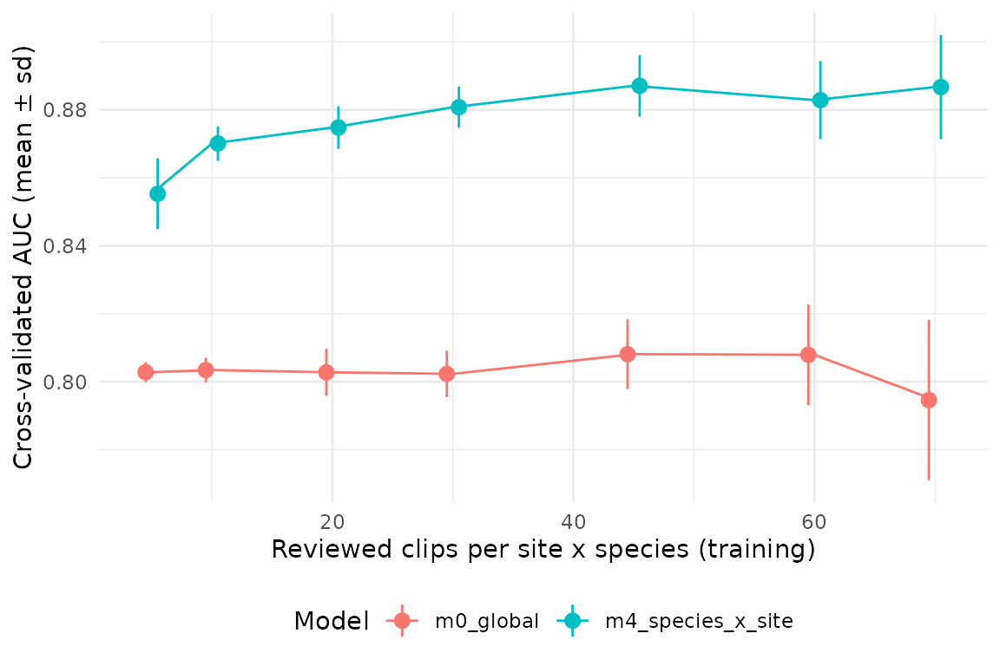

Manual review is the most expensive step of the workflow, so the number of clips to validate per site x species is a design decision. sheepdog offers two complementary views of it:
-
Stage 2,
calibration_effort(). The cross-validated AUC of a calibration model as a function of the number of reviewed clips per site x species cell. It answers whether, pooled over all cells, more clips would still improve the calibration. -
Stage 1,
precision_by_bin()andsuggest_thresholds(). Precision by confidence bin and the lowest threshold that reaches a target precision, for each site x species, with flags for bins and thresholds resting on few clips. They show which cells lack support.
This vignette runs both on the simulated example shipped with the package.
Example data
The example holds BirdNET predictions simulated for five frog species
at four sites over six months (data-raw/make_example_data.R
in the source repository). False-positive confidences overlap those of
true detections, and false-positive rates differ among species and
sites. The reviewed clips were drawn with the "top" design
(the two highest confidences per site x species x night x hour, up to 80
clips per site x species) and their verdicts come from the simulated
truth.
library(sheepdog)
library(dplyr, warn.conflicts = FALSE)
ex <- system.file("extdata", "example", package = "sheepdog")
val_files <- list.files(file.path(ex, "validation"), full.names = TRUE)
basename(val_files)
#> [1] "validation_by_clip_ARA.csv" "validation_by_clip_BAI.csv"
#> [3] "validation_by_clip_NHE.csv" "validation_by_clip_XAR.csv"read_validations() stacks the tables and keeps the clips
with a verdict and a confidence score, in the form used by the
calibration models:
val <- read_validations(val_files)
#> 1600 reviewed clips (809 TP / 791 FP) of 5 species at 4 sites.
val |>
summarise(precision = round(mean(tp), 2), .by = c(site, species)) |>
tidyr::pivot_wider(names_from = species, values_from = precision)
#> # A tibble: 4 × 6
#> site boa_ran den_nan lep_fus pse_pla sci_nas
#> <fct> <dbl> <dbl> <dbl> <dbl> <dbl>
#> 1 ARA 0.92 0.92 0.58 0.31 0.5
#> 2 BAI 0.92 0.46 0.26 0.28 0.4
#> 3 NHE 0.88 0.76 0 0.14 0.36
#> 4 XAR 0.78 0.68 0.38 0.28 0.31The table gives the share of true positives among the reviewed clips of each cell (20 cells of 80 clips). It already shows that the same design yields very different precision across species and sites.
Stage 2: the effort curve
How the curve is built
For each training size n in n_train,
calibration_effort() draws n clips from every site
x species cell (keeping at least five per cell for testing), fits the
model to the drawn clips and computes the AUC on all the remaining
clips. This is repeated n_reps times per n;
repetitions whose fit fails, or with fewer than 50 test clips, are
dropped. The result gives, for each n, the mean and standard
deviation of the AUC across repetitions.
The candidate formulas come from calibration_models(),
and compare_calibration_models() ranks them by 5-fold
cross-validation on all the clips (formulas with random effects need the
‘lme4’ package):
models <- calibration_models()
cv <- compare_calibration_models(val, models)
#> Cross-validation (5 folds) of 5 models...
select(cv, model, auc_mean, auc_sd)
#> # A tibble: 5 × 3
#> model auc_mean auc_sd
#> <chr> <dbl> <dbl>
#> 1 m4_species_x_site 0.885 0.0181
#> 2 m3_plus_site 0.882 0.0194
#> 3 m2_species_slope 0.872 0.0183
#> 4 m1_species_intercept 0.865 0.0221
#> 5 m0_global 0.804 0.0256The effort curve below is drawn for the global model
(m0_global, a single logistic regression on the logit of
the score) and for the hierarchical m4_species_x_site
(random slopes by species and a site x species intercept), the structure
used by FrogNet.
The vignette uses few repetitions so that it renders quickly. In real
use keep the default of 50 repetitions (or more): the standard deviation
is itself estimated from n_reps values and is unstable with
few repetitions. Training sizes must stay below the size of the smallest
cell minus five, since at most n - 5 clips of a cell are
used for training whatever the value of n_train.
n_train <- c(5, 10, 20, 30, 45, 60, 70)
n_reps <- 15The two curves
eff_m0 <- calibration_effort(val, models$m0_global,
n_train = n_train, n_reps = n_reps)
#> Effort curve (15 repetitions per n)...
eff_m0
#> # A tibble: 7 × 3
#> n_per_cell auc_mean auc_sd
#> <dbl> <dbl> <dbl>
#> 1 5 0.803 0.00291
#> 2 10 0.803 0.00361
#> 3 20 0.803 0.00692
#> 4 30 0.802 0.00684
#> 5 45 0.808 0.0103
#> 6 60 0.808 0.0148
#> 7 70 0.795 0.0236
eff_m4 <- calibration_effort(val, models$m4_species_x_site,
n_train = n_train, n_reps = n_reps)
#> Effort curve (15 repetitions per n)...
eff_m4
#> # A tibble: 7 × 3
#> n_per_cell auc_mean auc_sd
#> <dbl> <dbl> <dbl>
#> 1 5 0.855 0.0104
#> 2 10 0.870 0.00503
#> 3 20 0.875 0.00625
#> 4 30 0.881 0.00608
#> 5 45 0.887 0.00905
#> 6 60 0.883 0.0115
#> 7 70 0.887 0.0153The draws depend only on seed, n_train,
n_reps and the data, not on the formula, so with the same
arguments both curves are computed on the same training and test sets
and can be compared repetition by repetition.
effort <- bind_rows(m0_global = eff_m0,
m4_species_x_site = if (has_lme4) eff_m4,
.id = "model")
library(ggplot2)
ggplot(effort, aes(n_per_cell, auc_mean, colour = model)) +
geom_line() +
geom_pointrange(aes(ymin = auc_mean - auc_sd, ymax = auc_mean + auc_sd),
position = position_dodge(width = 2)) +
labs(x = "Reviewed clips per site x species (training)",
y = "Cross-validated AUC (mean ± sd)", colour = "Model") +
theme_minimal(base_size = 11) +
theme(legend.position = "bottom")
Reading the curve
Which formula. The curve belongs to a model, not to
the data. The mean AUC of the global model stays between 0.795 and 0.808
at every training size: it has only two parameters, which are estimated
well from a few clips per cell, and more clips cannot correct its
structural limitation, that one score-to-probability curve is shared by
all species and sites. The hierarchical model starts higher (0.855 with
5 clips per cell) and keeps improving (0.875 with 20 and 0.887 with 70),
because each additional clip also informs the species- and site-specific
terms. The gap between the curves is the gain from modelling how species
and sites differ; its size, not only the height of either curve, is what
the choice of formula rests on. Draw the curve for the formula that
compare_calibration_models() selects (or that
calibrate() refits), with m0_global as a
baseline.
Where it flattens. Beyond the training size at which the mean AUC stops increasing, extra clips in every cell add little discrimination. With a tolerance of 0.005 below the best mean AUC of each curve (an illustrative choice, not a rule of the package), the global model is flat from 10 clips per cell and the hierarchical model from 45. For the hierarchical model the gain per clip falls with effort: the first 5 extra clips per cell (from 5 to 10) add 0.015 to the mean AUC, and the next 35 (from 10 to 45) add 0.017 in total. The first clips of a cell fix its intercept and slope; the later ones only refine them. Small dips in the mean between neighbouring training sizes are within the spread of the repetitions and should not be read as losses.
The variability across repetitions. At small n the standard deviation measures how much the calibration depends on which clips were reviewed; a large spread means that a single validation round of that size may produce a poor model by chance. At large n the spread grows for a different reason: the test set is what is left of each cell, so it shrinks as n grows (with 70 training clips per cell, only 200 of the 1600 clips are left for testing). The right end of the curve is therefore estimated less precisely than its middle.
AUC measures discrimination (whether true detections score higher
than false ones), not whether the calibrated probabilities are accurate.
A curve that has flattened does not imply that the species- or
site-specific curves of plot_calibration() are well
estimated in every cell; that is what the per-cell view of stage 1
checks.
Stage 1: which cells lack support
The effort curve pools all cells. precision_by_bin() and
suggest_thresholds() work cell by cell on the
validation_by_clip.csv tables (the output of
post_validation()), so they read the raw tables rather than
the output of read_validations():
val_raw <- purrr::map(val_files, readr::read_csv, show_col_types = FALSE) |>
purrr::list_rbind()
prec <- precision_by_bin(val_raw, min_n = 15)
prec |>
filter(site == "BAI", species_folder %in% c("lep_fus", "pse_pla")) |>
mutate(precision = round(precision, 2)) |>
select(species_folder, bin, n = n_reviewed, precision) |>
tidyr::pivot_wider(names_from = species_folder,
values_from = c(n, precision))
#> # A tibble: 9 × 5
#> bin n_lep_fus n_pse_pla precision_lep_fus precision_pse_pla
#> <fct> <int> <int> <dbl> <dbl>
#> 1 [0.1,0.2) 15 2 0 0.5
#> 2 [0.2,0.3) 15 7 0.2 0.43
#> 3 [0.3,0.4) 12 6 0.08 0.33
#> 4 [0.4,0.5) 11 8 0 0.12
#> 5 [0.5,0.6) 10 15 0.4 0.07
#> 6 [0.6,0.7) 12 11 0.67 0.09
#> 7 [0.7,0.8) 3 14 1 0.5
#> 8 [0.8,0.9) 2 13 1 0.15
#> 9 [0.9,1] NA 4 NA 1A bin is flagged low_support when it holds fewer than
min_n reviewed clips (here, bins with n below
15). The two cells shown fail in different ways. For lep_fus at
BAI the few clips in the upper bins are all true positives, but those
bins are flagged: the precision at high scores rests on a handful of
clips. For pse_pla at BAI the upper bins hold more clips, and
precision there is still low: the classifier confuses this species even
at high scores.
suggest_thresholds() returns, for each cell, the lowest
confidence at which precision reaches target_precision with
at least min_n clips above it (NA when no cut
does):
thr <- suggest_thresholds(val_raw, target_precision = 0.90, min_n = 15)
thr |>
mutate(threshold = if_else(is.na(threshold), "-",
format(threshold, nsmall = 2))) |>
select(site, species_folder, threshold) |>
tidyr::pivot_wider(names_from = species_folder, values_from = threshold)
#> # A tibble: 4 × 6
#> site boa_ran den_nan lep_fus pse_pla sci_nas
#> <chr> <chr> <chr> <chr> <chr> <chr>
#> 1 ARA 0.18 0.20 0.55 - -
#> 2 BAI 0.15 - - - -
#> 3 NHE 0.35 0.84 - - -
#> 4 XAR 0.49 - - - -The target is reached in 7 of the 20 cells. A missing threshold has two possible causes, and they call for opposite decisions: too few reviewed clips at high scores (more review may help) or low precision even at high scores (more review will not). To tell them apart, count the high-score clips reviewed in each cell, their precision, and how many high-score detections in the complete selection tables were not reviewed:
conf_high <- 0.7 # example: what counts as a high score
min_n <- 15
detections <- suppressMessages(
read_selection_tables(file.path(ex, "birdnet"))) |>
mutate(species = gsub("-", "_", sub("^.*_", "", species_code)))
support <- val |>
mutate(across(c(site, species), as.character)) |>
summarise(n_fp = sum(tp == 0),
n_high = sum(confidence >= conf_high),
prec_high = round(mean(tp[confidence >= conf_high]), 2),
.by = c(site, species)) |>
left_join(detections |>
summarise(n_high_all = sum(confidence >= conf_high),
.by = c(site, species)),
by = c("site", "species")) |>
left_join(select(thr, site, species = species_folder, threshold),
by = c("site", "species")) |>
mutate(unreviewed_high = n_high_all - n_high,
diagnosis = case_when(
!is.na(threshold) ~ "reached",
unreviewed_high < min_n ~ "exhausted",
prec_high < 0.5 ~ "unreliable",
.default = "review more"
)) |>
select(site, species, n_fp, n_high, prec_high, unreviewed_high,
diagnosis) |>
arrange(diagnosis, species, site)
print(support, n = Inf)
#> # A tibble: 20 × 7
#> site species n_fp n_high prec_high unreviewed_high diagnosis
#> <chr> <chr> <int> <int> <dbl> <int> <chr>
#> 1 BAI lep_fus 59 5 1 0 exhausted
#> 2 NHE lep_fus 80 3 0 2 exhausted
#> 3 XAR lep_fus 50 10 1 0 exhausted
#> 4 ARA boa_ran 6 62 0.97 87 reached
#> 5 BAI boa_ran 6 63 1 97 reached
#> 6 NHE boa_ran 10 55 0.96 104 reached
#> 7 XAR boa_ran 18 50 0.96 84 reached
#> 8 ARA den_nan 6 48 0.98 65 reached
#> 9 NHE den_nan 19 54 0.85 85 reached
#> 10 ARA lep_fus 34 16 1 1 reached
#> 11 BAI den_nan 43 27 0.81 28 review more
#> 12 XAR den_nan 26 38 0.84 53 review more
#> 13 ARA sci_nas 40 32 0.69 18 review more
#> 14 BAI sci_nas 48 33 0.73 16 review more
#> 15 NHE sci_nas 51 40 0.52 47 review more
#> 16 XAR sci_nas 55 23 0.61 29 review more
#> 17 ARA pse_pla 55 25 0.4 22 unreliable
#> 18 BAI pse_pla 58 31 0.42 20 unreliable
#> 19 NHE pse_pla 69 34 0.18 60 unreliable
#> 20 XAR pse_pla 58 36 0.33 36 unreliableA cell is "reached" when
suggest_thresholds() found a threshold. The other labels
use illustrative cut-offs (conf_high, min_n
and a precision of 0.5 at high scores); set them from the precision the
study needs. In this example they separate three groups of cells that
lack support:
-
"review more": den_nan at BAI, den_nan at XAR, sci_nas at ARA, sci_nas at BAI, sci_nas at NHE, sci_nas at XAR. Precision at high scores is intermediate and unreviewed high-score detections remain, so a further round of review restricted to high scores in these cells may reveal a cut that reaches the target. -
"exhausted": lep_fus at BAI, lep_fus at NHE, lep_fus at XAR. The"top"design has already taken almost every high-score detection of these cells; more effort cannot add support. Treat the species at that site as poorly calibrated. -
"unreliable": pse_pla at ARA, pse_pla at BAI, pse_pla at NHE, pse_pla at XAR. Most high-score detections are false positives; more review would only confirm it. These cells call for retraining the classifier (with the clips ofretraining_clips()) rather than for more validation.
The column n_fp deserves a look of its own. The
calibration slope is estimated from the contrast between true and false
positives, so a cell with few false positives (here as few as 6) carries
little information about the low end of its calibration curve, even with
the same number of reviewed clips as the other cells. At the other
extreme, a cell whose reviewed clips are all false positives (lep_fus at
NHE) gives no information on true detections at all; it may be a site
where the species is absent. These are interpretations of the model
structure, not flags computed by the package.
The practical decision
Read the two views together:
- If the effort curve of the chosen model is still rising at the current number of clips per cell, review more clips in every cell: the pooled calibration is limited by the overall effort.
- If the curve has flattened but some cells lack support in stage 1, review more clips only in those cells, and target the confidence range where support is missing. Clips in cells that are already well supported add little.
- If a cell is
"exhausted"(no high-score detections left to review) or"unreliable"(low precision even at high scores), more validation cannot help. Treat the species at that site as poorly calibrated, as FrogNet did with the six species left out of the community matrices (seevignette("frognet-workflow")).
Two caveats apply. First, the curve depends on the formula: a
hierarchical formula needs ‘lme4’, and its curve can differ markedly
from that of the global model, so draw it for the model that will be
used. Second, the curve depends on how the clips were chosen. The
training and test clips of calibration_effort() are drawn
from the same reviewed pool, so the AUC describes discrimination among
clips selected by the same design. With the "top" design
the pool over-represents high scores; the AUC is conditional on that
design and is not an estimate of the false-positive rate of all
detections. For that, use the "random_detections" design,
which follows the observation-confirmation design of Chambert et al. (2015) (see
vignette("crywolf-integration")).
The effort curve can also be drawn inside the whole calibration
stage, with calibrate(..., effort_curve = TRUE); it is then
computed for the best model of the cross-validation and written to
effort_curve.csv. The arguments effort_n and
effort_reps set the training sizes and the number of
repetitions.
sites <- c("ARA", "BAI", "NHE", "XAR")
res <- calibrate(
validation_files = val_files,
prediction_tables = setNames(
file.path(ex, "birdnet", sites, "BirdNET_SelectionTable.txt"), sites),
output_dir = file.path(tempdir(), "calibration"),
effort_curve = TRUE, effort_n = c(5, 10, 20, 30, 45, 60, 70),
effort_reps = 50
)
res$effort